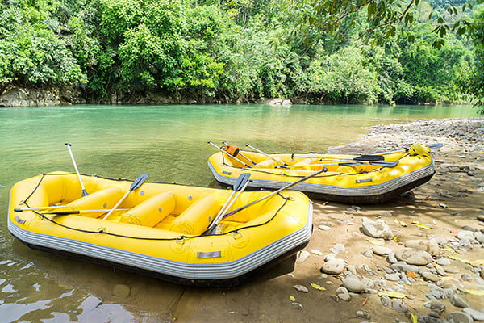
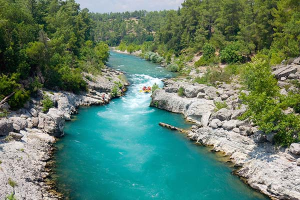

Available Trips For October 2026
| Trip Name | Location | Start Date | End Date |
|---|---|---|---|
| Divine Waters | Rio Acequias, Barinas | 10-10-26 | 12-10-26 |
| Beetween Wildness | Rio Yuruani, Bolivar | 11-10-26 | 13-10-26 |
| Camino a El Paraiso | Rio Neveri, Anzoategui | 11-10-26 | 12-10-26 |
| Water Roller Coaster | Rio Orinoco, Amazonas | 15-10-26 | 20-10-26 |
| Biggest Adventure | Rio Canagua, Barinas | 23-10-26 | 25-10-26 |
Note: Trip dates are subject to change based on seasonal river conditions. For specific details and availability, please contact us.
Contact Us!
Divine Waters - Río Acequias, Barinas
Prepare for an unforgettable journey into the lush foothills of Barinas. The Divine Waters trip takes you down the crystal-clear Acequias River, famous for its vibrant green surroundings and constant, thrilling action. This river features continuous Class III rapids, making it the perfect playground for both energetic beginners and intermediate rafters looking for non-stop fun.
Learn More
Between Wildness - Río Yuruani, Bolívar
For the ultimate thrill-seekers, Between Wildness offers an expedition into one of the oldest and most remote landscapes on Earth. Located in the majestic Bolívar state, the Yuruani River runs near the famous tepuis. This expedition challenges you with powerful Class IV rapids, drops, and roaring hydrowaves that require strong teamwork and a passion for pure adrenaline.
Learn More
Biggest Adventure - Río Canagua, Barinas
Get ready for the ultimate rafting challenge! The Biggest Adventure takes you deep into the roaring waters of the Canagua River in Barinas. Known for its powerful currents and immense volume, this expedition features intense, fast-paced Class IV rapids that will test your limits and demand precise teamwork. It is the definitive choice for adrenaline junkies.
Learn More